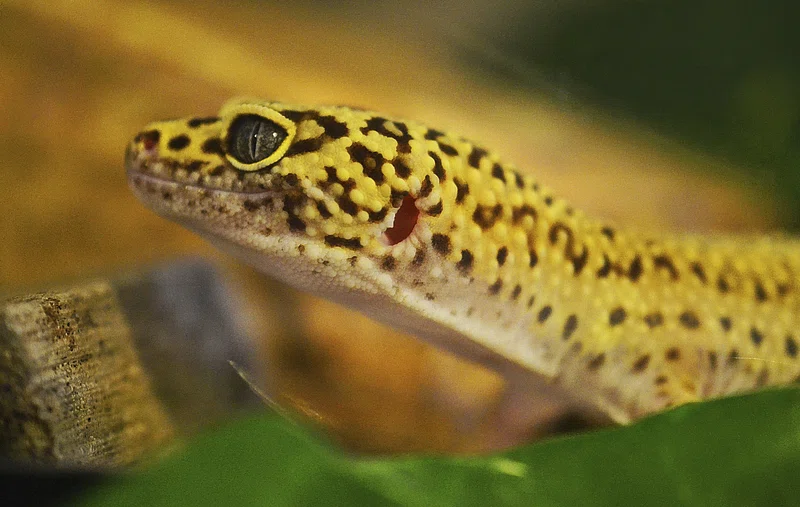
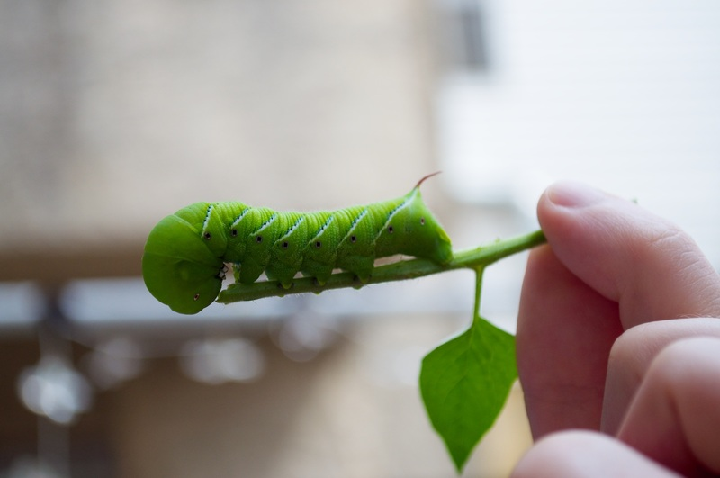
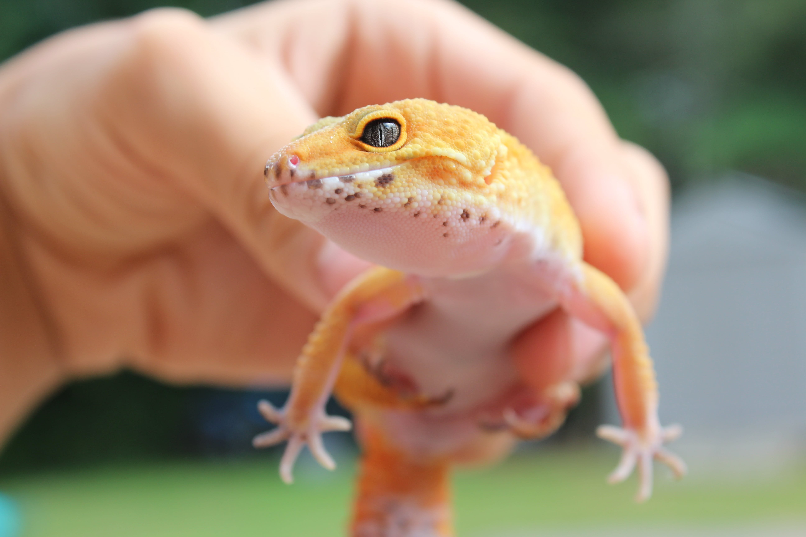

Giving your leopard gecko the best care it can get is cruical to them living a long healthy life.
Did you know that leopard geckos can live up to 20 years? They're a long time companion, and we want to make sure your little friend's life isn't cut short. There's of course a lot more to caring for your friend. We encourage you to do some more research as well.
On this page you'll find some basic and easy information about:
Habitat
Creating an ideal habitat for a leopard gecko is essential for their well-being and overall health. Leopard geckos, native to the arid regions of Afghanistan, Pakistan, and parts of India, thrive in captivity when their environment closely resembles their natural habitat. For the enclosure, opt for a tank that is at least 20 gallons for one leopard gecko, providing additional space for each additional gecko. A longer tank is preferable, as leopard geckos are ground-dwelling creatures. Selecting the right substrate is crucial – reptile carpet, paper towels, or a mix of eco earth and sand are suitable options. Avoid loose substrates like sand or gravel, as they can pose a risk of impaction if ingested. Incorporate multiple hiding spots within the terrarium, as leopard geckos are nocturnal and require safe, dark places to rest during the day. Commercial hides or natural hiding spots using rocks and logs work well. Maintain a temperature gradient within the enclosure, with a basking spot around 88-92°F (31-33°C) and a cooler side around 75-80°F (24-27°C). Utilize an under-tank heating pad or a heat lamp to achieve these temperatures. While leopard geckos do not require UVB lighting, a low-wattage light can simulate a day-night cycle. Control humidity levels, keeping them low at 30-40%, as leopard geckos are adapted to arid environments, and high humidity can lead to respiratory issues. Provide a shallow water dish for hydration. Enhance the terrarium with decorations such as artificial plants, branches, and rocks for visual appeal and enrichment. Ensure all decorations are securely positioned to prevent accidental collapse.
Diet
Ensuring a proper diet is vital for the health and vitality of leopard geckos kept in captivity. These insectivores thrive on a diverse range of live insects, including crickets, mealworms, waxworms, hornworms and dubia roaches. To maintain a balanced nutritional intake, it's essential to offer a variety of these insects. When it comes to feeding schedules, juvenile leopard geckos benefit from daily feedings to support their rapid growth, while adult geckos can be fed every other day or three times a week. Adjust the feeding frequency based on the age, size, and overall health of your gecko. Gut loading the insects before feeding is a crucial step in ensuring nutritional value. This involves providing the insects with nutrient-rich foods such as vegetables, fruits, and commercial gut-loading products 24 hours before serving them to your gecko. To prevent calcium deficiencies and metabolic bone disease, it's recommended to dust the insects with a calcium supplement containing vitamin D3 at least twice a week. Additionally, a multivitamin supplement can be introduced once a week for added nutritional variety. In the terrarium, always provide a shallow dish of fresh water. While leopard geckos derive most of their hydration from their food, access to water is still essential for their overall well-being. Monitor your gecko's eating habits closely and adjust its diet as needed. Regular observation ensures that your leopard gecko maintains a healthy weight and exhibits normal feeding behavior. By adhering to these dietary guidelines, you contribute significantly to the longevity and well-being of your leopard gecko in captivity.
Handling
Handling a leopard gecko is a delicate process that requires patience and consideration for the well-being of your pet. To start, allow your gecko to acclimate to its environment after any changes or introductions. This initial period of adjustment helps reduce stress and establishes a sense of security. When it comes to handling, choose an appropriate time, preferably during the evening or night since leopard geckos are nocturnal creatures. During these hours, they are generally more active and alert, making them more receptive to interaction. Approach your gecko with slow and gentle movements. Place your hand in the terrarium, allowing the gecko to see and smell you. Avoid sudden or abrupt gestures that might startle the gecko. Gradually coax the gecko onto your hand by placing it under its body and allowing it to crawl onto your palm at its own pace. Support the gecko's body properly while handling. They have delicate bodies and can be skittish, so make sure to provide a secure and stable surface for them to walk on. Avoid grabbing or restraining the gecko tightly, as this can cause stress and discomfort. Keep handling sessions short and gradually increase the duration as your gecko becomes more accustomed to it. Pay attention to their body language, if they show signs of stress, such as tail waving or vocalizations, gently return them to their enclosure. Remember that not all geckos enjoy handling, and individual preferences vary. Always respect your gecko's boundaries and avoid forcing interaction. Over time, consistent and gentle handling can help build trust and strengthen the bond between you and your leopard gecko.